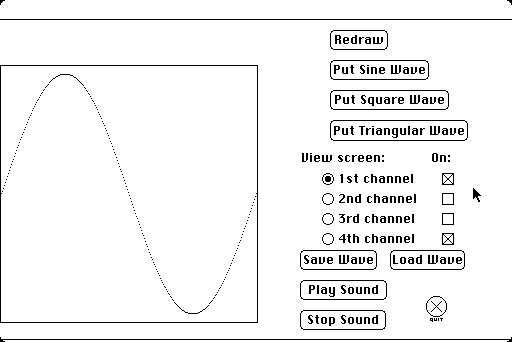

|
4instr is a small utility that can edit the 4 wavetables of the 4-tone synthesizer found in the Mac Plus. Current version only allows for 3-predetermined waveforms (sine, triangular and square wave). One, or simultaneous channels can be played at once. Save/load feature is implemented and creates raw data files of type '4TON'. It simply carries the 256 bytes of chars (8 bits) needed to recreate the waveform.
To edit one of the four channel waveforms, simply click in its rectangle to modify the pixels' location. You can hear the change in the sound as the points are displaced. NOTE: oftentimes, the sound driver will cut and you will cease to hear your sounds. Simply click on 'Play Sound' to resume the "noise" ;)
Download the source code and compiled program.

Last Update: 09.11.05
| |